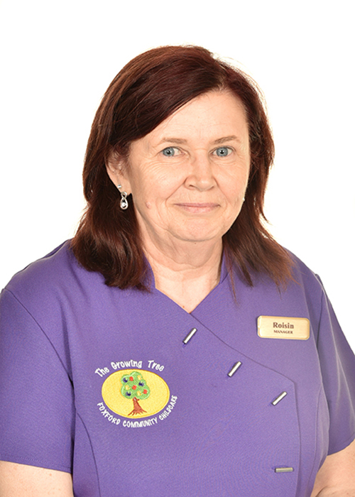

Our Staff

NAME:
Roisin Murphy
POSITION:
Manager / Early Years Educator - Room Leader
QUALIFICATIONS:
- Fetac Level 6 - Childcare Supervisor - (July 2003)
- Children First, Keeping Safe - (June 2002)
- Children First, Keeping Safe, Designated Module - (July 2004)
- Children First, Keeping Safe Disability Module - (Dec 2004)
- Always Children’s First, Foundation Training - (March 2017)
- Diversity, Equality & Inclusion Charter & Guidelines - (Jan 2017)
- Certificate in implementing HighScope - (November 2010)
- Buntas Start Training Programme - (November 2009)
- Lámh - (August 2016)
- Healthy Smart Start programme - (April 2017)
- First Aid Response (FAR) - (December 2018)
- Manual Handling - (April 2019)
- Fire Warden/Fire Safety Training - (April 2019)
- Managing Allergies and Anaphylaxis Training - (June 2015)
- GDPR E Training for Management - (October 2019)
NAME:
Mary Gillespie
POSITION:
Accounts Manager
QUALIFICATIONS:
- Book Keeping Course with Mayo County Council - (2009)
- Accounting Course at GMIT Castlebar - (2001)
- Book Child Protection and Welfare Training - (September 2014)
- Introduction to Children First, E Training - (2018)
- Manual Handling - (April 2019)
- Fire Warden / Fire Safety Training - (April 2019)
NAME:
Noney Smyth
POSITION:
Assistant Manager/Early Years Educator - Room Leader
QUALIFICATIONS:
- Early Childhood Care and Education B.A. Honours Level 8 - (June 2020)
- Level 5 Special Needs - (July 2004)
- Children First, Keeping Safe - (May 2006)
- Children First, Keeping Safe Disability Module - (May 2006)
- Always Children’s First, Foundation Training - (March 2017)
- Certificate in implementing HighScope - (November 2010)
- Buntas Start Training Programme - (November 2009)
- Lámh - (August 2016)
- Hanen Programme - (October 18)
- Healthy Smart Start programme - (April 2017)
- Occupational First Aid - (June 2015)
- Manual Handling - (April 2019)
- Fire Warden/Fire Safety Training - (April 2019)
- Managing Allergies and Anaphylaxis Training - (November 2015)
NAME:
Sharon Walsh
POSITION:
Early Years Educator - Room Leader
QUALIFICATIONS:
- Fetac Level 6 Childcare Supervisor - (July 2013)
- QQI Level 5 Children with Additional Needs - (July 2017)
- Certificate in implementing HighScope - (June 2015)
- Buntas Start training Programme - (June 2008)
- Children’s First – Keeping Safe - (November 2012)
- Introduction to Children First, E Training (2018)
- Paediatrics - First Aid November 2016)
- Managing Allergies & Anaphylaxis Training - (November 2015)
- Manual Handling - (April 2019)
- Fire Warden / Fire Safety Training - (April 2019)
- Lámh - (August 2016)
NAME:
Catherine Bourke
POSITION:
Early Years Educator
QUALIFICATIONS:
- Fetac Level 5 Early Childhood Care Education - (July 2007)
- Fetac Level 5 in Additional Needs - (June 2018)
- Certificate in implementing HighScope - (2012)
- Children’s First, Keeping Safe - (November 2012)
- Introduction to Children First, E Training (2018)
- Paediatrics First Aid - (November 2016)
- Managing Allergies & Anaphylaxis Training - (November 2015)
- Manual Handling - (April 2019)
- Fire Warden / Fire Safety Training - (April 2019)
- Lámh - (August 2016)
- Autism inclusion Training - (June 2018)
NAME:
Agnieszka (Agnes) Abramowicz
POSITION:
Early Years Practitioner
QUALIFICATIONS:
- Master Diploma in Social and Educational Studies - (2001)
- Bachelor’s Degree in Social Prevention Studies - (1999)
- Post Graduate Sociotherapy Studies, (Children’s and Youth Group Therapy) - (2005)
- Fetac Level 5 Additional Needs - (June 2018)
- Certificate in implementing HighScope - (June 2015)
- Child Protection and Welfare Training - (September 2014)
- Introduction to Children First, E Training - (2018)
- Managing Allergies & Anaphylaxis Training - (November 2015)
- Hanen programme - (June 2019)
- Manual Handling - (April 2019)
- Fire Warden / Fire Safety Training - (April 2019)
NAME:
Madeline Lavelle
POSITION:
Early Years Educator
QUALIFICATIONS:
- Fetac Level 6 Childcare Supervisor - (June 2012)
- Fetac level 5 Nursing Studies - (June 2011)
- Business and Secretarial Studies - (August 2010)
- Certificate of Irish Sign Language - (2014)
- First Aid Response (FAR) - (March 2019)
- Manual Handling - (April 2019)
- Fire Warden / Fire Safety Training - (April 2019)

NAME:
Cathrina Jennings
POSITION:
Early Years Educator
QUALIFICATIONS:
- Early Childhood Care and Education B.A. Level 8
(June 2018) - Introduction to Children First, E Training
(March 2018)

NAME:
Caroline Kirwan
POSITION:
Early Years Educator
QUALIFICATIONS:
- Fetac Level 5 Childcare
(May 2005) - Introduction to Children First, E Training
(February 2020)
NAME:
Elizabeth Hawkins
POSITION:
Catering Manager
QUALIFICATIONS:
- Food Safety & HACCP Training (August 2016)
- Introduction to Children First, E Training (2018)
- Manual Handling - (April 2019)
- Fire Warden / Fire Safety Training - (April 2019)